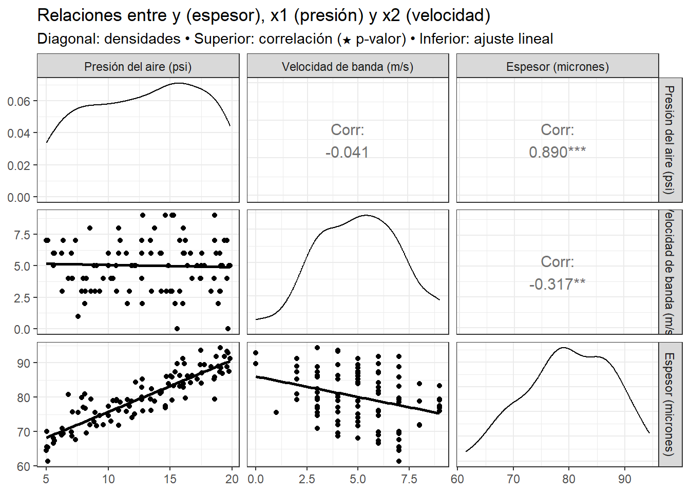
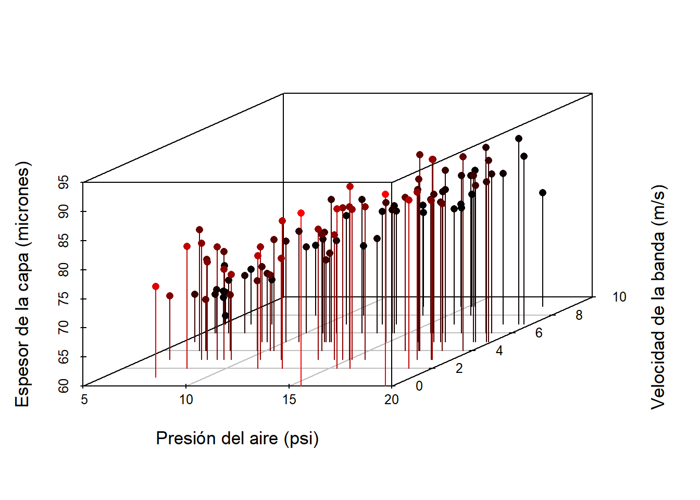
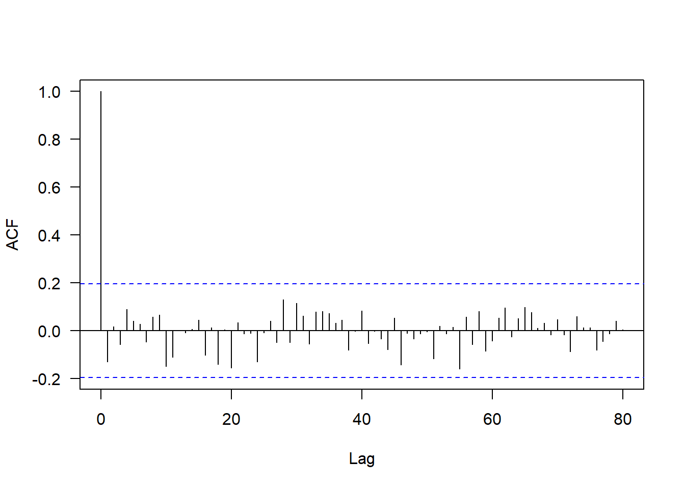
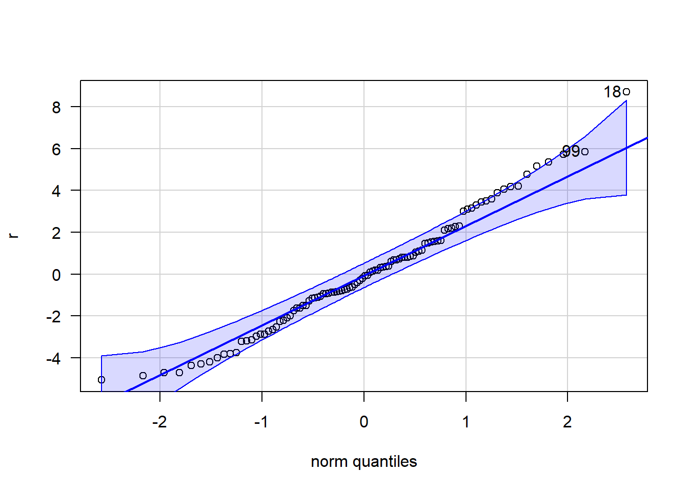
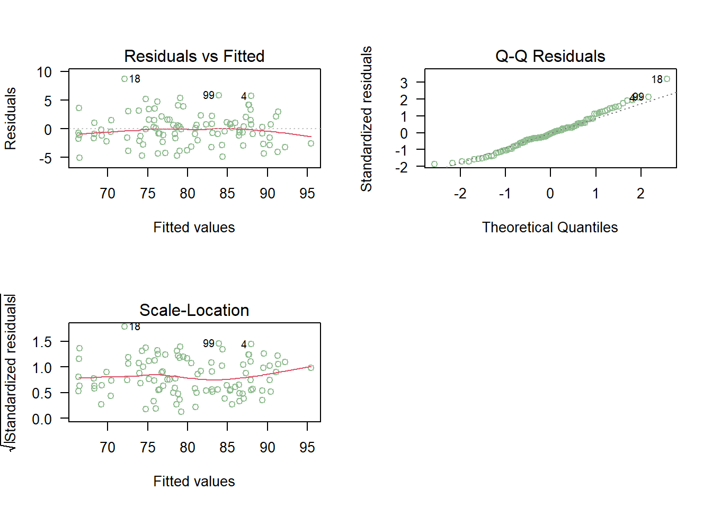

Capítulo 8 Regresión lineal multiple
Como se mencionó en el Capítulo de rls, los modelos de regresión lineal permiten predecir valores futuros de una variable respuesta continua a partir de valores específicos de las variables controlables del proceso.
En la práctica, pueden existir múltiples variables controlables en un proceso de producción o de servicios.
Por ejemplo, en un proceso de pintura electrostática, puede interesar determinar el espesor de la capa de pintura (variable respuesta \(y\), en micrones) con la que se recubre una lámina de área determinada, a partir de valores conocidos de:
- la presión del aire (\(x_1\), en psi), y
- la velocidad de la banda transportadora (\(x_2\), en m/s).
En este contexto, el objetivo es:
- Determinar la magnitud de la influencia de las variables \(x_1\) y \(x_2\) sobre el espesor esperado de la capa.
- Construir una función de predicción \(f(x_1, x_2)\) que permita estimar el espesor esperado.
- Elaborar intervalos de confianza y predicción para dicho valor.
Si la variable respuesta \(y\) es continua y aproximadamente simétrica, los objetivos (1), (2) y (3) pueden abordarse mediante la estimación de un modelo de regresión lineal.
Dado que el número de variables controlables es \(k > 1\), una alternativa apropiada es utilizar el modelo de Regresión Lineal Múltiple (RLM)
El modelo de RLM es una extensión del modelo de RLS cuando se tiene más de una variable controlable.
Las notas de clase son tomadas del texto (Montgomery, Peck, and Vining 2012)
8.1 Formulación matemática del modelo de RLM
El modelo RLM puede relacionar la respuesta \(y\) con \(k\) regresores o variables predictoras.
El modelo se expresa como:
\[ \begin{align} y = \beta_0 + \beta_1 x_1 + \beta_2 x_2 + \cdots + \beta_k x_k + \varepsilon \tag{8.1} \end{align} \]
Este se denomina modelo de regresión lineal múltiple con \(k\) regresores.
También, el modelo de RLM puede expresarse como: para \(i=1,\dots,n,\)
\[ \begin{align} y_i &= \beta_0 + \beta_1 x_{i1} + \beta_2 x_{i2} + \cdots + \beta_k x_{ik} + \varepsilon_i, \\ \varepsilon_i &\sim N(0, \sigma^2), \\ \sigma^2 &= \text{constante.} \end{align} \]
donde:
- \(\beta_0\) es la ordenada al origen,
- \(\beta_i\) son los coeficientes de regresión que miden la influencia de cada variable \(x_i\), y
- \(\varepsilon_i\) representa el término de error aleatorio.
8.2 Estimación de los coeficientes del modelo de RLM
Los coeficientes del modelo de RLM pueden estimarse mediante el método de mínimos cuadrados ordinarios (MCO), que busca minimizar la suma de los cuadrados de las diferencias entre los valores observados y los valores predichos por el modelo.
\[ \begin{align} y_i &= \beta_0 + \beta_1 x_{i1} + \beta_2 x_{i2} + \cdots + \beta_k x_{ik} + \varepsilon_i \\ &= \beta_0 + \sum_{j=1}^{k} \beta_j x_{ij} + \varepsilon_i, \quad i = 1, 2, \ldots, n \tag{8.2} \end{align} \]
La función de mínimos cuadrados es:
\[ \begin{align} S(\beta_0, \beta_1, \ldots, \beta_k) &= \sum_{i=1}^{n} \varepsilon_i^2 \\ &= \sum_{i=1}^{n} \left( y_i - \beta_0 - \sum_{j=1}^{k} \beta_j x_{ij} \right)^2 \tag{8.3} \end{align} \]
Se debe minimizar la función \(S\) respecto a \(\beta_0, \beta_1, \ldots, \beta_k\). Los estimadores de \(\beta_0, \beta_1, \ldots, \beta_k\) por mínimos cuadrados deben satisfacer:
\[ \begin{align} \left. \frac{\partial S}{\partial \beta_0} \right|_{\hat{\beta}_0, \hat{\beta}_1, \ldots, \hat{\beta}_k} &= -2 \sum_{i=1}^{n} \left( y_i - \hat{\beta}_0 - \sum_{j=1}^{k} \hat{\beta}_j x_{ij} \right) = 0 \tag{8.4a} \\ \left. \frac{\partial S}{\partial \beta_j} \right|_{\hat{\beta}_0, \hat{\beta}_1, \ldots, \hat{\beta}_k} &= -2 \sum_{i=1}^{n} \left( y_i - \hat{\beta}_0 - \sum_{j=1}^{k} \hat{\beta}_j x_{ij} \right) x_{ij} = 0, \quad j = 1, 2, \ldots, k \tag{8.4b} \end{align} \]
Al simplificar las ecuaciones (8.4), se obtienen las ecuaciones normales de mínimos cuadrados:
\[ \begin{align} n\hat{\beta}_0 + \hat{\beta}_1 \sum_{i=1}^{n} x_{i1} + \hat{\beta}_2 \sum_{i=1}^{n} x_{i2} + \cdots + \hat{\beta}_k \sum_{i=1}^{n} x_{ik} &= \sum_{i=1}^{n} y_i \\ \hat{\beta}_0 \sum_{i=1}^{n} x_{i1} + \hat{\beta}_1 \sum_{i=1}^{n} x_{i1}^2 + \hat{\beta}_2 \sum_{i=1}^{n} x_{i1}x_{i2} + \cdots + \hat{\beta}_k \sum_{i=1}^{n} x_{i1}x_{ik} &= \sum_{i=1}^{n} x_{i1}y_i \\ \vdots \nonumber \\ \hat{\beta}_0 \sum_{i=1}^{n} x_{ik} + \hat{\beta}_1 \sum_{i=1}^{n} x_{ik}x_{i1} + \hat{\beta}_2 \sum_{i=1}^{n} x_{ik}x_{i2} + \cdots + \hat{\beta}_k \sum_{i=1}^{n} x_{ik}^2 &= \sum_{i=1}^{n} x_{ik}y_i \tag{8.5} \end{align} \]
Nótese que hay \(p = k + 1\) ecuaciones normales, una para cada uno de los coeficientes desconocidos del modelo de regresión. La solución de estas ecuaciones normales proporciona los estimadores por mínimos cuadrados \(\hat{\beta}_0, \hat{\beta}_1, \ldots, \hat{\beta}_k\).
Es más cómodo manejar los modelos de regresión múltiple en notación matricial, ya que permite representar de manera compacta el modelo, los datos y los resultados. En notación matricial, el modelo expresado por la ecuación (8.2) es:
\[ \mathbf{y} = \mathbf{X}\boldsymbol{\beta} + \boldsymbol{\varepsilon} \]
en donde:
\[ \mathbf{y} = \begin{bmatrix} y_1 \\[3pt] y_2 \\[3pt] \vdots \\[3pt] y_n \end{bmatrix}, \quad \mathbf{X} = \begin{bmatrix} 1 & x_{11} & x_{12} & \cdots & x_{1k} \\ 1 & x_{21} & x_{22} & \cdots & x_{2k} \\ \vdots & \vdots & \vdots & \ddots & \vdots \\ 1 & x_{n1} & x_{n2} & \cdots & x_{nk} \end{bmatrix}, \quad \boldsymbol{\beta} = \begin{bmatrix} \beta_0 \\[3pt] \beta_1 \\[3pt] \vdots \\[3pt] \beta_k \end{bmatrix}, \quad \boldsymbol{\varepsilon} = \begin{bmatrix} \varepsilon_1 \\[3pt] \varepsilon_2 \\[3pt] \vdots \\[3pt] \varepsilon_n \end{bmatrix} \]
donde:
- \(\mathbf{y}\): vector \((n \times 1)\) de observaciones.
- \(\mathbf{X}\): matriz \((n \times p)\) de niveles de las variables independientes.
- \(\boldsymbol{\beta}\): vector \((p \times 1)\) de coeficientes de regresión.
- \(\boldsymbol{\varepsilon}\): vector \((n \times 1)\) de términos de error aleatorio.
Se desea determinar el vector \(\hat{\boldsymbol{\beta}}\) de estimadores de mínimos cuadrados que minimice:
\[ S(\boldsymbol{\beta}) = \sum_{i=1}^{n} \varepsilon_i^2 = \boldsymbol{\varepsilon}'\boldsymbol{\varepsilon} = (\mathbf{y} - \mathbf{X}\boldsymbol{\beta})'(\mathbf{y} - \mathbf{X}\boldsymbol{\beta}) \]
Nótese que \(S(\boldsymbol{\beta})\) puede expresarse como:
\[ \begin{align} S(\boldsymbol{\beta}) &= \mathbf{y}'\mathbf{y} - \boldsymbol{\beta}'\mathbf{X}'\mathbf{y} - \mathbf{y}'\mathbf{X}\boldsymbol{\beta} + \boldsymbol{\beta}'\mathbf{X}'\mathbf{X}\boldsymbol{\beta} \\ &= \mathbf{y}'\mathbf{y} - 2\boldsymbol{\beta}'\mathbf{X}'\mathbf{y} + \boldsymbol{\beta}'\mathbf{X}'\mathbf{X}\boldsymbol{\beta} \end{align} \]
ya que \(\boldsymbol{\beta}'\mathbf{X}'\mathbf{y}\) es un escalar (matriz \(1 \times 1\)) y su traspuesta \((\boldsymbol{\beta}'\mathbf{X}'\mathbf{y})' = \mathbf{y}'\mathbf{X}\boldsymbol{\beta}\) es el mismo escalar.
Los estimadores de mínimos cuadrados deben satisfacer:
\[ \frac{\partial S}{\partial \boldsymbol{\beta}} = -2\mathbf{X}'\mathbf{y} + 2\mathbf{X}'\mathbf{X}\hat{\boldsymbol{\beta}} = 0 \]
lo que se simplifica a:
\[ \mathbf{X}'\mathbf{X}\hat{\boldsymbol{\beta}} = \mathbf{X}'\mathbf{y} \tag{8.6} \]
Para resolver las ecuaciones normales se multiplican ambos lados de (8.6) por la inversa de \(\mathbf{X}'\mathbf{X}\). Así, el estimador de \(\boldsymbol{\beta}\) por mínimos cuadrados es:
\[ \hat{\boldsymbol{\beta}} = (\mathbf{X}'\mathbf{X})^{-1}\mathbf{X}'\mathbf{y} \tag{8.7} \]
Este estimador existe siempre que \((\mathbf{X}'\mathbf{X})^{-1}\) exista, lo cual ocurre si los regresores son linealmente independientes, es decir, si ninguna columna de la matriz \(\mathbf{X}\) es una combinación lineal de las demás.
Es fácil ver que la forma matricial de las ecuaciones normales (8.6) es idéntica a la forma escalar (8.5). Al escribir (8.6) con detalle se obtiene:
\[ \begin{bmatrix} n & \displaystyle\sum_{i=1}^{n} x_{i1} & \displaystyle\sum_{i=1}^{n} x_{i2} & \cdots & \displaystyle\sum_{i=1}^{n} x_{ik} \\[8pt] \displaystyle\sum_{i=1}^{n} x_{i1} & \displaystyle\sum_{i=1}^{n} x_{i1}^2 & \displaystyle\sum_{i=1}^{n} x_{i1}x_{i2} & \cdots & \displaystyle\sum_{i=1}^{n} x_{i1}x_{ik} \\[8pt] \vdots & \vdots & \vdots & \ddots & \vdots \\[8pt] \displaystyle\sum_{i=1}^{n} x_{ik} & \displaystyle\sum_{i=1}^{n} x_{ik}x_{i1} & \displaystyle\sum_{i=1}^{n} x_{ik}x_{i2} & \cdots & \displaystyle\sum_{i=1}^{n} x_{ik}^2 \end{bmatrix} \begin{bmatrix} \hat{\beta}_0 \\[3pt] \hat{\beta}_1 \\[3pt] \vdots \\[3pt] \hat{\beta}_k \end{bmatrix} = \begin{bmatrix} \displaystyle\sum_{i=1}^{n} y_i \\[8pt] \displaystyle\sum_{i=1}^{n} x_{i1}y_i \\[8pt] \vdots \\[8pt] \displaystyle\sum_{i=1}^{n} x_{ik}y_i \end{bmatrix} \]
Si se realiza la multiplicación matricial indicada, se obtiene la forma escalar de las ecuaciones normales (8.5). En esta forma se observa que \(\mathbf{X}'\mathbf{X}\) es una matriz simétrica de dimensión \(p \times p\), y que \(\mathbf{X}'\mathbf{y}\) es un vector columna de dimensión \(p \times 1\).
Los elementos diagonales de \(\mathbf{X}'\mathbf{X}\) son las sumas de los cuadrados de los elementos de las columnas de \(\mathbf{X}\), mientras que los elementos fuera de la diagonal son las sumas de los productos cruzados entre columnas de \(\mathbf{X}\). Los elementos de \(\mathbf{X}'\mathbf{y}\) son las sumas de los productos cruzados de las columnas de \(\mathbf{X}\) con las observaciones \(y_i\).
8.2.1 Modelo ajustado de regresión
El modelo ajustado correspondiente a los niveles de las variables regresoras \(\mathbf{x}' = [1, x_1, x_2, \ldots, x_k]\) es:
\[ \hat{y} = \mathbf{x}'\hat{\boldsymbol{\beta}} = \hat{\beta}_0 + \sum_{j=1}^{k} \hat{\beta}_j x_j \]
El vector de valores ajustados \(\hat{\mathbf{y}}\), que corresponde a los valores observados \(\mathbf{y}\), se expresa como:
\[ \hat{\mathbf{y}} = \mathbf{X}\hat{\boldsymbol{\beta}} = \mathbf{X}(\mathbf{X}'\mathbf{X})^{-1}\mathbf{X}'\mathbf{y} = \mathbf{H}\mathbf{y} \tag{8.8} \]
donde \(\mathbf{H} = \mathbf{X}(\mathbf{X}'\mathbf{X})^{-1}\mathbf{X}'\) es una matriz \(n \times n\), conocida como matriz de sombrero (hat matrix). Esta matriz transforma los valores observados en los valores ajustados y juega un papel central en el análisis de regresión.
8.2.2 Vector de residuales
La diferencia entre el valor observado \(y_i\) y el valor ajustado \(\hat{y}_i\) se denomina residual:
\[ e_i = y_i - \hat{y}_i \]
Por lo tanto, el vector de residuales se puede escribir en notación matricial como:
\[ \mathbf{e} = \mathbf{y} - \hat{\mathbf{y}} \tag{8.9a} \]
de manera equivalente:
\[ \mathbf{e} = \mathbf{y} - \mathbf{X}\hat{\boldsymbol{\beta}} = \mathbf{y} - \mathbf{H}\mathbf{y} = (\mathbf{I} - \mathbf{H})\mathbf{y} \tag{8.9b} \]
- Como ejemplo, consideremos los siguientes datos provenientes de un proceso de pintura electrostática: datos de pintura
Code
## y x1 x2
## 1 91.88308 18.722091 6
## 2 94.37544 19.056131 3
## 3 74.63026 9.292093 3
## 4 93.66348 17.456714 4
## 5 76.84981 14.626183 9
## 6 76.05198 12.786439 9- En este caso, la variable respuesta \(y\) representa el espesor de la capa de pintura (en micrones), mientras que \(x_1\) corresponde a la presión del aire (en psi) y \(x_2\) a la velocidad de la banda transportadora (en m/s).
- Una forma inicial de explorar si existe una relación lineal entre la variable respuesta \(y\) y las variables predictoras \(x_1\) y \(x_2\) es mediante una red de diagramas de dispersión (scatterplot matrix), como se muestra a continuación.
Code
library(GGally)
library(tidyverse)
# Etiquetas para ejes/paneles
labs_cols <- c("x1" = "Presión del aire (psi)",
"x2" = "Velocidad de banda (m/s)",
"y" = "Espesor (micrones)")
# Red de gráficos:
df %>%
ggpairs(
columns = c("x1", "x2", "y"),
columnLabels = labs_cols[c("x1", "x2", "y")],
diag = list(continuous = "densityDiag"),
upper = list(continuous = GGally::wrap("cor", method = "pearson", stars = TRUE, size = 4)),
lower = list(continuous = GGally::wrap("smooth", method = "lm", se = FALSE))
) +
theme_bw() +
labs(title = "Relaciones entre y (espesor), x1 (presión) y x2 (velocidad)",
subtitle = "Diagonal: densidades • Superior: correlación (★ p-valor) • Inferior: ajuste lineal")
- La Figura anterior muestra la red de diagramas de dispersión entre la variable respuesta \(y\) (espesor de la capa de pintura) y las variables predictoras \(x_1\) (presión del aire) y \(x_2\) (velocidad de la banda transportadora). A partir del gráfico se pueden obtener las siguientes conclusiones:
Relación entre \(y\) y \(x_1\) (presión del aire): Se observa una fuerte correlación positiva (\(r = 0.890\), altamente significativa).
A medida que la presión del aire aumenta, también lo hace el espesor de la capa de pintura. Esto indica que \(x_1\) tiene una influencia directa e importante sobre la variable respuesta.Relación entre \(y\) y \(x_2\) (velocidad de la banda): Se presenta una correlación negativa moderada (\(r = -0.317\)), estadísticamente significativa. A mayor velocidad de la banda, el espesor tiende a disminuir, lo cual es consistente con el comportamiento físico del proceso:una mayor velocidad reduce el tiempo de exposición, y por tanto, la cantidad de pintura depositada.
Relación entre \(x_1\) y \(x_2\):La correlación entre las variables explicativas es muy baja (\(r = -0.041\)), indicando independencia práctica entre ambas. Esto es favorable, ya que sugiere ausencia de multicolinealidad, lo que garantiza estimadores más estables en el modelo.
- Un gráfico en 3D permite explorar visualmente la relación conjunta entre las tres variables del proceso de pintura electrostática: el espesor de la capa (\(y\)), la presión del aire (\(x_1\)) y la velocidad de la banda transportadora (\(x_2\)). Este diagrama puede generarse con el paquete scatterplot3d, como se muestra a continuación:
Code
library(scatterplot3d)
# Gráfico 3D
scatterplot3d(
x = df$x1,
y = df$x2,
z = df$y,
pch = 16,
color = "steelblue",
type = "h", # Líneas verticales desde el plano XY
highlight.3d = TRUE, # Resalta profundidad con color
angle = 55,
xlab = "Presión del aire (psi)",
ylab = "Velocidad de la banda (m/s)",
zlab = "Espesor de la capa (micrones)",
cex.lab = 1.1
)
- El gráfico 3D muestra que al aumentar la presión del aire, el espesor de la capa también aumenta, mientras que al incrementar la velocidad de la banda, el espesor disminuye ligeramente.
- El mismo gráfico de dispersión 3D puede construirse de manera interactiva con el paquete plotly. Esto permite rotar, acercar o explorar los puntos desde diferentes ángulos, lo cual facilita la visualización del comportamiento del espesor frente a la presión y la velocidad.
Code
library(plotly)
# Gráfico 3D interactivo
plot_ly(
data = df,
x = ~x1,
y = ~x2,
z = ~y,
type = "scatter3d",
mode = "markers",
marker = list(size = 5, color = ~y, colorscale = "Reds", showscale = TRUE)
) %>%
layout(
scene = list(
xaxis = list(title = "Presión del aire (psi)"),
yaxis = list(title = "Velocidad de la banda (m/s)"),
zaxis = list(title = "Espesor de la capa (micrones)")
),
title = "Gráfico 3D interactivo: relación entre presión, velocidad y espesor"
)- El gráfico 3D interactivo muestra que el espesor de la capa aumenta con la presión del aire y disminuye ligeramente al aumentar la velocidad de la banda, confirmando una tendencia lineal coherente con el modelo de regresión múltiple.
- Para ajustar (entrenar) el modelo de regresión multiple, encontremos los coeficientes, lo haremos paso a paso:
Code
## Intercept x1 x2
## Intercept 100.000 1286.718 503.000
## x1 1286.718 18587.290 6435.177
## x2 503.000 6435.177 2941.000## Intercept x1 x2
## Intercept 0.159084 -0.006570 -0.012833
## x1 -0.006570 0.000493 0.000044
## x2 -0.012833 0.000044 0.002438## [,1]
## Intercept 8005.60
## x1 106059.83
## x2 39779.69Code
## Estimadores
## (Intercepto) 66.284831
## x1 1.482753
## x2 -1.055206- Para estimar el modelo de RLM, utilizamos la función
lmcomo se muestra a continuación:
##
## Call:
## lm(formula = y ~ x1 + x2, data = df)
##
## Residuals:
## Min 1Q Median 3Q Max
## -5.0571 -1.6610 -0.1362 1.5409 8.7008
##
## Coefficients:
## Estimate Std. Error t value Pr(>|t|)
## (Intercept) 66.28483 1.10350 60.068 < 2e-16 ***
## x1 1.48275 0.06144 24.132 < 2e-16 ***
## x2 -1.05521 0.13660 -7.725 1.03e-11 ***
## ---
## Signif. codes: 0 '***' 0.001 '**' 0.01 '*' 0.05 '.' 0.1 ' ' 1
##
## Residual standard error: 2.767 on 97 degrees of freedom
## Multiple R-squared: 0.8716, Adjusted R-squared: 0.8689
## F-statistic: 329.1 on 2 and 97 DF, p-value: < 2.2e-16- El modelo estimado con los datos experimentales es:
\[ \hat{y}_i = 66.285 + 1.483\,x_{1i} - 1.055\,x_{2i}\qquad \varepsilon_i \sim N(0, \sigma^2), \quad \sigma^2 = \text{constante.} \]
- y la interpretación seria:
- \(\beta_1 = 1.483\): al aumentar la presión del aire en una unidad (1 psi), el espesor promedio de la capa aumenta aproximadamente 1.483 micrones, manteniendo constante la velocidad de la banda.
- \(\beta_2 = -1.055\): al incrementar la velocidad de la banda en una unidad (1 m/s), el espesor promedio disminuye en aproximadamente 1.055 micrones, manteniendo constante la presión del aire.
- \(\beta_0 = 66.285\): representa el espesor promedio estimado cuando tanto la presión como la velocidad son cero (valor teórico de referencia).
- \(\beta_1 = 1.483\): al aumentar la presión del aire en una unidad (1 psi), el espesor promedio de la capa aumenta aproximadamente 1.483 micrones, manteniendo constante la velocidad de la banda.
- Ahora, obtengamos los residuos paso a paso:
Code
## y_observado y_ajustado residuo
## [1,] 91.88308 87.71384 4.1692406
## [2,] 94.37544 91.37476 3.0006861
## [3,] 74.63026 76.89710 -2.2668374
## [4,] 93.66348 87.94801 5.7154730
## [5,] 76.84981 78.47500 -1.6251960
## [6,] 76.05198 75.74712 0.3048659- Usando la función
resid, obtienes el residual
## 1 2 3 4 5 6
## 4.1692406 3.0006861 -2.2668374 5.7154730 -1.6251960 0.30486598.3 Propiedades de los estimadores de \(\beta\)
8.3.1 Esperanza del estimador de mínimos cuadrados
Las propiedades estadísticas del estimador de mínimos cuadrados \(\hat{\boldsymbol{\beta}}\) se pueden demostrar fácilmente. Comenzaremos examinando su sesgo.
Sabemos que:
\[ \hat{\boldsymbol{\beta}} = (\mathbf{X}'\mathbf{X})^{-1}\mathbf{X}'\mathbf{y} \]
Dado que \(\mathbf{y} = \mathbf{X}\boldsymbol{\beta} + \boldsymbol{\varepsilon}\), se tiene:
\[ \begin{align} E(\hat{\boldsymbol{\beta}}) &= E\!\left[(\mathbf{X}'\mathbf{X})^{-1}\mathbf{X}'\mathbf{y}\right] \\[6pt] &= E\!\left[(\mathbf{X}'\mathbf{X})^{-1}\mathbf{X}'(\mathbf{X}\boldsymbol{\beta} + \boldsymbol{\varepsilon})\right] \\[6pt] &= E\!\left[(\mathbf{X}'\mathbf{X})^{-1}\mathbf{X}'\mathbf{X}\boldsymbol{\beta} + (\mathbf{X}'\mathbf{X})^{-1}\mathbf{X}'\boldsymbol{\varepsilon}\right] \\[6pt] &= E\!\left[\boldsymbol{\beta} + (\mathbf{X}'\mathbf{X})^{-1}\mathbf{X}'\boldsymbol{\varepsilon}\right] \\[6pt] &= \boldsymbol{\beta} + (\mathbf{X}'\mathbf{X})^{-1}\mathbf{X}'E(\boldsymbol{\varepsilon}) \end{align} \]
Como \(E(\boldsymbol{\varepsilon}) = 0\), se obtiene:
\[ \boxed{E(\hat{\boldsymbol{\beta}}) = \boldsymbol{\beta}} \]
Por lo tanto, \(\hat{\boldsymbol{\beta}}\) es un estimador insesgado de \(\boldsymbol{\beta}\).
8.3.2 Varianza del estimador de mínimos cuadrados
Probemos iniciamente que \(Var(\mathbf{A}\mathbf{z}) = \mathbf{A}\,Var(\mathbf{z})\,\mathbf{A}'\). En efecto, sea \(\mathbf{z}\) un vector aleatorio con \(E(\mathbf{z})=\boldsymbol{\mu}\) y varianza
\[ Var(\mathbf{z}) = E\!\left[(\mathbf{z}-\boldsymbol{\mu})(\mathbf{z}-\boldsymbol{\mu})'\right]. \]
Sea \(\mathbf{A}\) una matriz constante de dimensión compatible y definamos \(\mathbf{y}=\mathbf{A}\mathbf{z}\). Entonces \(E(\mathbf{y})=E(\mathbf{A}\mathbf{z})=\mathbf{A}E(\mathbf{z})=\mathbf{A}\boldsymbol{\mu}\) por lo que
\[ \begin{align} Var(\mathbf{y}) &= E\!\left[(\mathbf{y}-E(\mathbf{y}))(\mathbf{y}-E(\mathbf{y}))'\right] \\[4pt] &= E\!\left[(\mathbf{A}\mathbf{z}-\mathbf{A}\boldsymbol{\mu})\,(\mathbf{A}\mathbf{z}-\mathbf{A}\boldsymbol{\mu})'\right] \\[4pt] &= E\!\left[\mathbf{A}(\mathbf{z}-\boldsymbol{\mu})\,(\mathbf{z}-\boldsymbol{\mu})'\mathbf{A}'\right] \quad (\text{factorizando } \mathbf{A} \text{ y } \mathbf{A}' \text{ al ser constantes}) \\[4pt] &= \mathbf{A}\,E\!\left[(\mathbf{z}-\boldsymbol{\mu})(\mathbf{z}-\boldsymbol{\mu})'\right]\mathbf{A}' \\[4pt] &= \mathbf{A}\,Var(\mathbf{z})\,\mathbf{A}'. \end{align} \]
En consecuencia
\[ \boxed{\,Var(\mathbf{A}\mathbf{z}) = \mathbf{A}\,Var(\mathbf{z})\,\mathbf{A}'\,} \]
Nota: si la transformación es afín \(\mathbf{y}=\mathbf{A}\mathbf{z}+\mathbf{b}\) con \(\mathbf{b}\) constante, el término \(\mathbf{b}\) no afecta a la varianza y el resultado se mantiene.
Por lo otro, recordemos que el estimador de mínimos cuadrados se define como:
\[ \hat{\boldsymbol{\beta}} = (\mathbf{X}'\mathbf{X})^{-1}\mathbf{X}'\mathbf{y} \]
y que el modelo lineal se expresa como:
\[ \mathbf{y} = \mathbf{X}\boldsymbol{\beta} + \boldsymbol{\varepsilon}, \qquad E(\boldsymbol{\varepsilon}) = 0, \quad Var(\boldsymbol{\varepsilon}) = \sigma^2 \mathbf{I}. \]
Sustituyendo \(\mathbf{y}\) en la expresión de \(\hat{\boldsymbol{\beta}}\):
\[ \begin{align} \hat{\boldsymbol{\beta}} &= (\mathbf{X}'\mathbf{X})^{-1}\mathbf{X}'(\mathbf{X}\boldsymbol{\beta} + \boldsymbol{\varepsilon}) \\[6pt] &= \boldsymbol{\beta} + (\mathbf{X}'\mathbf{X})^{-1}\mathbf{X}'\boldsymbol{\varepsilon} \end{align} \]
Ahora calculamos la varianza de \(\hat{\boldsymbol{\beta}}\):
\[ \begin{align} Var(\hat{\boldsymbol{\beta}}) &= Var\!\left[\boldsymbol{\beta} + (\mathbf{X}'\mathbf{X})^{-1}\mathbf{X}'\boldsymbol{\varepsilon}\right] \\[6pt] &= Var\!\left[(\mathbf{X}'\mathbf{X})^{-1}\mathbf{X}'\boldsymbol{\varepsilon}\right] \end{align} \]
Nota: El término \(\boldsymbol{\beta}\) es constante, por lo tanto no contribuye a la varianza.
Aplicando la propiedad de la varianza de una transformación lineal \(Var(\mathbf{A}\mathbf{z}) = \mathbf{A} \, Var(\mathbf{z}) \, \mathbf{A}'\):
\[ \begin{align} Var(\hat{\boldsymbol{\beta}}) &= (\mathbf{X}'\mathbf{X})^{-1}\mathbf{X}' \, Var(\boldsymbol{\varepsilon}) \, \mathbf{X} (\mathbf{X}'\mathbf{X})^{-1} \end{align} \]
Como por hipótesis del modelo \(Var(\boldsymbol{\varepsilon}) = \sigma^2 \mathbf{I}\), sustituimos:
\[ \begin{align} Var(\hat{\boldsymbol{\beta}}) &= (\mathbf{X}'\mathbf{X})^{-1}\mathbf{X}'(\sigma^2 \mathbf{I})\mathbf{X}(\mathbf{X}'\mathbf{X})^{-1} \\[6pt] &= \sigma^2 (\mathbf{X}'\mathbf{X})^{-1}\mathbf{X}'\mathbf{X}(\mathbf{X}'\mathbf{X})^{-1} \\[6pt] &= \sigma^2 (\mathbf{X}'\mathbf{X})^{-1} \end{align} \]
Por lo tanto, la varianza del estimador de mínimos cuadrados es:
\[ \boxed{Var(\hat{\boldsymbol{\beta}}) = \sigma^2 (\mathbf{X}'\mathbf{X})^{-1}} \]
La varianza de \(\hat{\beta}_j\) y la covarianza entre \(\hat{\beta}_i\) y \(\hat{\beta}_j\) están dadas por:
\[ \begin{align} Var(\hat{\beta}_j) &= \sigma^2 (\mathbf{X}'\mathbf{X})^{-1}_{jj}, \qquad j = 0, 1, 2, \ldots, p; \\[6pt] Cov(\hat{\beta}_i, \hat{\beta}_j) &= \sigma^2 (\mathbf{X}'\mathbf{X})^{-1}_{ij}, \qquad i \neq j. \end{align} \]
A partir de \(E[\hat{\beta}_j]\) y \(Var(\hat{\beta}_j)\), es posible realizar inferencia estadística sobre el parámetro \(\beta_j\),
para \(j = 1, 2, \ldots, k\).
Sin embargo, se debe notar que \(Var(\hat{\beta}_j)\) depende de \(\sigma^2\), la varianza del modelo de regresión lineal múltiple, la cual se estima a través del Error Cuadrático Medio (MSE).
- Los coeficientes del modelo de RLM ajustado para los datos provenientes del proceso de pintura electrostática se obtienen haciendo:
## (Intercept) x1 x2
## 66.284831 1.482753 -1.055206A partir de estos coeficientes, el modelo ajustado será
\[ \hat{y}= 66.285 +1.483x_1-1.055x_2 \]
Note que esta es la ecuación de un plano en el espacio \((x_1,x_2,y)\).
8.4 Estimación de la varianza del modelo \(\sigma^2\)
Al igual que en la regresión lineal simple, en la regresión múltiple es posible estimar la varianza \(\sigma^2\) a partir de la suma de cuadrados de los residuos, definida como:
\[ SSE = \sum_{i=1}^{n} (y_i - \hat{y}_i)^2 = \sum_{i=1}^{n} e_i^2 = \mathbf{e}'\mathbf{e} \]
donde \(\mathbf{e}\) representa el vector de residuos.
Sustituyendo \(\mathbf{e} = \mathbf{y} - \mathbf{X}\hat{\boldsymbol{\beta}}\), se obtiene:
\[ \begin{align} SSE &= (\mathbf{y} - \mathbf{X}\hat{\boldsymbol{\beta}})'(\mathbf{y} - \mathbf{X}\hat{\boldsymbol{\beta}}) \\[6pt] &= \mathbf{y}'\mathbf{y} - \hat{\boldsymbol{\beta}}'\mathbf{X}'\mathbf{y} - \mathbf{y}'\mathbf{X}\hat{\boldsymbol{\beta}} + \hat{\boldsymbol{\beta}}'\mathbf{X}'\mathbf{X}\hat{\boldsymbol{\beta}} \\[6pt] &= \mathbf{y}'\mathbf{y} - 2\hat{\boldsymbol{\beta}}'\mathbf{X}'\mathbf{y} + \hat{\boldsymbol{\beta}}'\mathbf{X}'\mathbf{X}\hat{\boldsymbol{\beta}}\\[6pt] &=\mathbf{y}'\mathbf{y} - \hat{\boldsymbol{\beta}}'\mathbf{X}'\mathbf{y}, \hspace{1cm}\text{puesto que }\mathbf{X}'\mathbf{X}\hat{\boldsymbol{\beta}} = \mathbf{X}'\mathbf{y} \end{align} \]
Luego la suma de cuadrados residual \(SSE\) tiene \(n - p\) grados de libertad, donde \(p\) es el número de parámetros estimados (incluyendo el intercepto). Por lo tanto, el cuadrado medio residual o Error Cuadrático Medio (MSE) se define como:
\[ MSE = \frac{SSE}{n - p} \]
8.4.1 Estimador insesgado de \(\sigma^2\)
Demostremos que \(E(MSE)=\sigma^2\). En efecto.
Los supuestos del MLR: \(\mathbf{y}=\mathbf{X}\boldsymbol{\beta}+\boldsymbol{\varepsilon}\), \(E(\boldsymbol{\varepsilon})=\mathbf{0}\), \(Var(\boldsymbol{\varepsilon})=\sigma^2\mathbf{I}\), con \(\mathbf{X}\) fija (no aleatoria).
Definimos la matriz “sombrero” \(\mathbf{H}=\mathbf{X}(\mathbf{X}'\mathbf{X})^{-1}\mathbf{X}'\). Los residuos son \(\mathbf{e}=\mathbf{y}-\hat{\mathbf{y}}=(\mathbf{I}-\mathbf{H})\mathbf{y}\).
Como \(\mathbf{y}=\mathbf{X}\boldsymbol{\beta}+\boldsymbol{\varepsilon}\) y \((\mathbf{I}-\mathbf{H})\mathbf{X}=\mathbf{0}\), entonces:
\[ \begin{align} \mathbf{e} &= (\mathbf{I} - \mathbf{H})(\mathbf{X}\boldsymbol{\beta} + \boldsymbol{\varepsilon}) \\[6pt] &= (\mathbf{I} - \mathbf{H})\mathbf{X}\boldsymbol{\beta} + (\mathbf{I} - \mathbf{H})\boldsymbol{\varepsilon}\\[6pt] &=(\mathbf{I} - \mathbf{H})\boldsymbol{\varepsilon}. \end{align} \]
La suma de cuadrados residual es \(SSE=\mathbf{e}'\mathbf{e}\). Por lo anterior,
\[ \begin{align} SSE &= \mathbf{e}'(\mathbf{I}-\mathbf{H})\boldsymbol{\varepsilon}\\[6pt] &= \boldsymbol{\varepsilon}'(\mathbf{I}-\mathbf{H})'(\mathbf{I}-\mathbf{H})\boldsymbol{\varepsilon}\\[6pt] &=\boldsymbol{\varepsilon}'(\mathbf{I}-\mathbf{H})\boldsymbol{\varepsilon},\hspace{1cm} \text{puesto que } \mathbf{I}-\mathbf{H} \text{ es idempotente} \end{align} \]
Tomamos esperanza usando la identidad \(E(\mathbf{z}'\mathbf{A}\mathbf{z})=\mathrm{tr}\!\big(\mathbf{A}\,E(\mathbf{z}\mathbf{z}')\big)\) para matriz constante \(\mathbf{A}\):
\[ \begin{align} E(SSE) &=E(\boldsymbol{\varepsilon}'(\mathbf{I}-\mathbf{H})\boldsymbol{\varepsilon})= E\!\left[\mathrm{tr}\big((\mathbf{I}-\mathbf{H})\,\boldsymbol{\varepsilon}\boldsymbol{\varepsilon}'\big)\right] \\[4pt] &= \mathrm{tr}\!\left((\mathbf{I}-\mathbf{H})\,E(\boldsymbol{\varepsilon}\boldsymbol{\varepsilon}')\right) = \mathrm{tr}\!\left((\mathbf{I}-\mathbf{H})\,Var(\boldsymbol{\varepsilon})\right) \\[4pt] &= \mathrm{tr}\!\left((\mathbf{I}-\mathbf{H})\,\sigma^2\mathbf{I}\right) = \sigma^2\,\mathrm{tr}(\mathbf{I}-\mathbf{H}) \\[4pt] &= \sigma^2\,(n - \mathrm{tr}(\mathbf{H})). \end{align} \]
Como \(\mathbf{H}\) es idempotente y simétrica, \(\mathrm{tr}(\mathbf{H})=\mathrm{rank}(\mathbf{H})=p\) (número de parámetros, incluyendo intercepto). Por tanto,
\[ E(SSE)=\sigma^2 (n-p). \]
El cuadrado medio residual es \(MSE=\dfrac{SSE}{n-p}\). Luego,
\[ E(MSE)=\frac{E(SSE)}{n-p}=\frac{\sigma^2 (n-p)}{n-p}=\sigma^2.\square \]
Demuestre que \(E(\mathbf{z}'\mathbf{A}\mathbf{z})=\mathrm{tr}\!\big(\mathbf{A}\,E(\mathbf{z}\mathbf{z}')\big)\) para matriz constante \(\mathbf{A}\)
- Continuando con el ejemplo del espesor de pintura:
Code
## y x1 x2
## 1 91.88308 18.722091 6
## 2 94.37544 19.056131 3
## 3 74.63026 9.292093 3
## 4 93.66348 17.456714 4
## 5 76.84981 14.626183 9
## 6 76.05198 12.786439 9Code
## [,1]
## Intercepto 66.284831
## x1 1.482753
## x2 -1.055206Code
# 3) Calcular SSE usando:
SSE <- as.numeric(t(y) %*% y - t(beta_hat) %*% t(X) %*% y)
# 4) Verificación con residuos directos
y_hat <- X %*% beta_hat
e <- y - y_hat
SSE_residuos <- sum(e^2)
# 5) MSE y RMSE
n <- nrow(X) # número de observaciones
p <- ncol(X) # número de parámetros (incluido intercepto)
MSE <- SSE / (n - p) # Error cuadrático medio
RMSE <- sqrt(MSE) # Raíz del error cuadrático medio
# 6) Mostrar resultados
resultados <- data.frame(
Métrica = c("n (obs)", "p (parámetros)", "SSE", "MSE", "RMSE"),
Valor = c(n, p, SSE, MSE, RMSE)
)
kable(resultados, digits = 6, align = c("c", "c"), caption = "Resumen de resultados del modelo")| Métrica | Valor |
|---|---|
| n (obs) | 100.000000 |
| p (parámetros) | 3.000000 |
| SSE | 742.490379 |
| MSE | 7.654540 |
| RMSE | 2.766684 |
- Usando la función
lmsería:
## [1] 7.65454Por lo tanto, el modelo estimado será:
\[ \begin{align} \hat{y} &= 66.285 + 1.483x_1 - 1.055x_2 \\[6pt] \varepsilon &\sim N(0, \sigma^2) \\[6pt] \hat{\sigma}^2 &= 7.655 \end{align} \]
8.5 Prueba de significancia global de la RLM
La se utiliza para determinar si existe una entre la variable respuesta \(y\) y al menos una de las variables regresoras \(x_1, x_2, \ldots, x_k\). Este procedimiento se considera una prueba general o global de la adecuación del modelo.
8.5.1 Hipótesis
\[ \begin{align} H_0 &: \beta_1 = \beta_2 = \cdots = \beta_k = 0 \\[4pt] H_1 &: \beta_j \neq 0 \quad \text{para al menos una } j \end{align} \]
El rechazo de \(H_0\) implica que al menos uno de los regresores \(x_1, x_2, \ldots, x_k\) contribuye de manera significativa al modelo.
8.5.2 Descomposición de la suma de cuadrados
La suma total de cuadrados puede expresarse como:
\[ \begin{align} SST = SSR + SSE \end{align} \]
donde8.5.3 Estadístico de prueba
El estadístico de prueba \(F_0\) se define como:
\[ \begin{align} F_0 = \frac{SSR / k}{SSE / (n - k - 1)} = \frac{MSR}{MSE} \end{align} \]
Bajo \(H_0\), este estadístico sigue una distribución \(F_{k,\,n-k-1}\).
8.5.4 Cuadrados medios esperados
Se cumple que
\[ \begin{align} E(MSE) &= \sigma^2 \\[6pt] E(MSR) &= \sigma^2 + \frac{\boldsymbol{\beta}^{*'} \mathbf{X}_c' \mathbf{X}_c \boldsymbol{\beta}^*}{k\sigma^2} \end{align} \]
tal que
\[ \boldsymbol{\beta}^* = (\beta_1, \beta_2, \ldots, \beta_k)' \quad \text{y} \quad \mathbf{X}_c = \begin{bmatrix} x_{11}-\bar{x}_1 & x_{12}-\bar{x}_2 & \cdots & x_{1k}-\bar{x}_k \\ x_{21}-\bar{x}_1 & x_{22}-\bar{x}_2 & \cdots & x_{2k}-\bar{x}_k \\ \vdots & \vdots & \ddots & \vdots \\ x_{n1}-\bar{x}_1 & x_{n2}-\bar{x}_2 & \cdots & x_{nk}-\bar{x}_k \end{bmatrix} \]
Demuestre que \(E(MSR) = \sigma^2 + \frac{\boldsymbol{\beta}^{*'} \mathbf{X}_c' \mathbf{X}_c \boldsymbol{\beta}^*}{k\sigma^2}\)
8.5.5 Parámetro de no centralidad
Cuando al menos una \(\beta_j \neq 0\), el estadístico \(F_0\) tiene una distribución \(F\) no central con parámetro de no centralidad:
\[ \begin{align} \lambda = \frac{\boldsymbol{\beta}^{*'} \mathbf{X}_c' \mathbf{X}_c \boldsymbol{\beta}^*}{\sigma^2} \end{align} \]
8.5.6 Regla de decisión
Se rechaza la hipótesis nula \(H_0\) si:
\[ \begin{align} F_0 > F_{\alpha,\,k,\,n-k-1} \end{align} \]
8.5.7 Tabla ANOVA para la RLM
Code
# --- Tabla ANOVA en R para RMarkdown ---
library(knitr)
anova_tab <- data.frame(
`Fuente de variación` = c("Regresión", "Residuales", "Total"),
`Suma de cuadrados` = c("SSR", "SSE", "SST"),
`Grados de libertad` = c("k", "n - k - 1", "n - 1"),
`Cuadrado medio` = c("MSR = SSR / k", "MSE = SSE / (n - k - 1)", "---")
)
kable(
anova_tab,
caption = "Análisis de varianza para determinar la significancia del modelo",
align = "lccc"
)| Fuente.de.variación | Suma.de.cuadrados | Grados.de.libertad | Cuadrado.medio |
|---|---|---|---|
| Regresión | SSR | k | MSR = SSR / k |
| Residuales | SSE | n - k - 1 | MSE = SSE / (n - k - 1) |
| Total | SST | n - 1 | — |
8.5.8 Formulas de la suma de cuadrados en la RLM
Una fórmula de cálculo para la suma de cuadrados de los residuales se deduce partiendo de:
\[ SSE = \mathbf{y}'\mathbf{y} - \hat{\boldsymbol{\beta}}'\mathbf{X}'\mathbf{y} \]
y dado que la suma total de cuadrados es:
\[ SST = \sum_{i=1}^{n} y_i^2 - \frac{\left(\sum_{i=1}^{n} y_i \right)^2}{n} = \mathbf{y}'\mathbf{y} - \frac{\left(\sum_{i=1}^{n} y_i \right)^2}{n}, \]
se puede escribir la ecuación anterior como:
\[ SSR = \mathbf{y}'\mathbf{y} - \frac{\left(\sum_{i=1}^{n} y_i \right)^2}{n} - \left[\hat{\boldsymbol{\beta}}'\mathbf{X}'\mathbf{y} - \frac{\left(\sum_{i=1}^{n} y_i \right)^2}{n}\right] \]
o bien
\[ SSE = SST - SSR \]
Por consiguiente, la suma de cuadrados de la regresión es:
\[ SSR = \hat{\boldsymbol{\beta}}'\mathbf{X}'\mathbf{y} - \frac{\left(\sum_{i=1}^{n} y_i \right)^2}{n} \tag{3.24} \]
La suma de cuadrados de los residuales, o suma residual de cuadrados, es:
\[ SSE = \mathbf{y}'\mathbf{y} - \hat{\boldsymbol{\beta}}'\mathbf{X}'\mathbf{y} \]
Y la suma total de cuadrados es:
\[ SST = \mathbf{y}'\mathbf{y} - \frac{\left(\sum_{i=1}^{n} y_i \right)^2}{n} \]
Estas expresiones permiten establecer la relación:
\[ SST= SSR + SSE, \]
que constituye la base del análisis de varianza (ANOVA) en la regresión lineal múltiple.
- Hagamos el ANOVA
Code
# 1) Cálculo algebraico de SST
SST <- as.numeric(t(y) %*% y - (sum(y)^2)/n)
# 2) Cálculo algebraico de SSR
SSR <- as.numeric(t(beta_hat) %*% t(X) %*% y - (sum(y)^2)/n)
# 3) Cálculo algebraico de SSE
SSE <- as.numeric(t(y) %*% y - t(beta_hat) %*% t(X) %*% y)
# 4) ANOVA (df, MS, F0 y p-valor) ---
k <- p -1
df_reg <- k
df_res <- n - k - 1
df_tot <- n - 1
MSR <- SSR / df_reg
MSE <- SSE / df_res
F0 <- MSR / MSE
p_val <- pf(F0, df_reg, df_res, lower.tail = FALSE)
# 5) Mostrar resultados en tablas
tab_anova <- data.frame(
`Fuente de variación` = c("Regresión", "Residuales", "Total"),
`Suma de cuadrados` = c(SSR, SSE, SST),
`Gl` = c(df_reg, df_res, df_tot),
`Cuadrado medio` = c(MSR, MSE, NA),
`F0` = c(F0, NA, NA),
`p-valor` = c(p_val, NA, NA)
)
kable(
tab_anova,
digits = 6,
align = "lrrrrr",
caption = "Tabla ANOVA (derivada algebraicamente)"
)| Fuente.de.variación | Suma.de.cuadrados | Gl | Cuadrado.medio | F0 | p.valor |
|---|---|---|---|---|---|
| Regresión | 5038.3096 | 2 | 2519.15482 | 329.106 | 0 |
| Residuales | 742.4904 | 97 | 7.65454 | NA | NA |
| Total | 5780.8000 | 99 | NA | NA | NA |
- Usando la función
lm:
## value numdf dendf
## 329.106 2.000 97.0008.6 Prueba individual de significancia para los coeficientes
Una vez se ha rechazado la prueba de significancia global, podemos analizar la significancia individual de cada coeficiente \(\beta_j\). El objetivo es determinar si, a nivel poblacional, el coeficiente asociado a una variable explicativa \(x_j\) es diferente de cero.
Esto equivale a plantear las hipótesis:
\[ \begin{align} H_0 &: \beta_j = 0 \\[4pt] H_1 &: \beta_j \neq 0 \end{align} \]
Para un valor fijo de \(j\), el estadístico de prueba es:
\[ t_j = \frac{\hat{\beta}_j - 0}{\text{s.e.}(\hat{\beta}_j)} = \frac{\hat{\beta}_j}{\sqrt{\hat{\sigma}^2 \, ( \mathbf{X}'\mathbf{X} )^{-1}_{jj}}} \sim t_{n - p} \]
donde
- \(\hat{\beta}_j\) es el estimador del coeficiente poblacional \(\beta_j\);
- \(\hat{\sigma}^2 = MSE\) es la varianza residual estimada;
- \(( \mathbf{X}'\mathbf{X} )^{-1}_{jj}\) es el elemento diagonal \(j,j\) de la matriz inversa de \(X'X\).
La regla de decisión es:
Rechazamos \(H_0\) con un nivel de significancia de \(100(1-\alpha)\%\) si
\[ |t_j| > t_{\alpha/2,\,n-p}. \]
- Seguimos con ejemplo del espesor de la pintura. Usando la función
lmy ssummarypodemos obtener la inferencia para cada \(\beta\)
## Estimate Std. Error t value Pr(>|t|)
## (Intercept) 66.284831 1.10349995 60.067815 1.529216e-78
## x1 1.482753 0.06144364 24.131927 8.750958e-43
## x2 -1.055206 0.13659758 -7.724922 1.026117e-11- Hagamos el paso a paso:
Code
# Matrices
y <- df$y
X <- cbind(Intercepto = 1, x1 = df$x1, x2 = df$x2)
# Dimensiones
n <- nrow(X)
p <- ncol(X)
# Estimacion de betas
XtX <- t(X) %*% X
XtX_inv <- solve(XtX)
Xty <- t(X) %*% y
beta_hat <- XtX_inv %*% Xty
# Residuos y varianza residual
y_hat <- X %*% beta_hat
e <- y - y_hat
SSE <- as.numeric(crossprod(e))
MSE <- SSE / (n - p)
# Varianza-covarianza de betas
Vb <- as.matrix(MSE * XtX_inv)
# Error estándar de cada beta_hat_j
se_b <- sqrt(diag(Vb))
# Estadístico t calculado
tval <- beta_hat / se_b
df_t <- n - p
# p-valores bilaterales: 2*P(T > |t|)
pval <- 2 * pt(-abs(tval), df = df_t)8.7 Intervalos de confianza para \(\beta_j\)
Otra forma de realizar inferencia para \(\boldsymbol{\beta}\) es mediante intervalos de confianza del \(100 \times (1-\alpha)\%\). Para \(j\) fijo, es fácil mostrar que
\[ \beta_j \in \left( \hat{\beta}_j - t_{\alpha/2,\,n-p}\;\sqrt{\hat{\sigma}^2\,\big(\mathbf{X}'\mathbf{X}\big)^{-1}_{jj}}\;,\; \hat{\beta}_j + t_{\alpha/2,\,n-p}\;\sqrt{\hat{\sigma}^2\,\big(\mathbf{X}'\mathbf{X}\big)^{-1}_{jj}} \right). \]
donde \(\hat{\sigma}^2 = MSE = SSE/(n-p)\) y \(\big(\mathbf{X}'\mathbf{X}\big)^{-1}_{jj}\) es el elemento diagonal \(j,j\) de \((\mathbf{X}'\mathbf{X})^{-1}\).
- Continuemos con el mismo ejemplo:
Code
alpha <- 0.05 # cambia si deseas otro nivel
tcrit <- qt(1 - alpha/2, df = n - p)
lower <- as.vector(beta_hat) - tcrit * se_b
upper <- as.vector(beta_hat) + tcrit * se_b
res_ci <- data.frame(
Coeficiente = colnames(X),
Estimador = as.vector(beta_hat),
Std.Error = se_b,
t_crit = tcrit,
IC_inf = lower,
IC_sup = upper,
check.names = FALSE
)
print(res_ci)## Coeficiente Estimador Std.Error t_crit IC_inf IC_sup
## Intercepto Intercepto 66.284831 1.10349995 1.984723 64.094689 68.4749731
## x1 x1 1.482753 0.06144364 1.984723 1.360805 1.6047020
## x2 x2 -1.055206 0.13659758 1.984723 -1.326314 -0.7840972- Una forma de construir los intervalos de confianza para los coeficientes del modelo es utilizando la función
confint.default:
## 2.5 % 97.5 %
## (Intercept) 64.122011 68.4476513
## x1 1.362326 1.6031807
## x2 -1.322932 -0.78747938.8 Coeficiente de determinación \(R^2\) y \(R^2\) ajustado de la RLM
Recordemos que, adicional al MSE, a partir de la tabla ANOVA es posible calcular el porcentaje de variabilidad de la respuesta explicado por el modelo de regresión lineal múltiple (RLM), conocido como coeficiente de determinación o, simplemente, \(R^2\):
\[ R^2 = \frac{SSR}{SST} = 1 - \frac{SSE}{SST} \]
El coeficiente \(R^2\) mide qué proporción de la variabilidad total de \(y\) es explicada por el modelo. Sin embargo, \(R^2\) tiende a aumentar conforme se agregan más variables, incluso si no son relevantes. Por ello se recomienda utilizar el \(R^2\) ajustado, definido como:
\[ R^2_{\text{ajustado}} = 1 - \frac{SSE / (n - p)}{SST / (n - 1)} \]
La interpretación de esta medida es similar a la del \(R^2\):
indica la proporción de la variabilidad explicada, pero corrigiendo el sesgo por el número de predictores en el modelo.
- Continuando con el ejemplo de espesor de la pintura. Hallemos el \(R^2\) y \(R^2\) ajustado:
8.9 Inferencia para la respuesta
El modelo de ajustado puede utilizarse para predecir \(E[Y \mid \mathbf{x}_0]\) si se validan .
8.9.1 Intervalos de confianza para \(E[Y \mid \mathbf{x}_0]\)
Sea \(\mathbf{y}=\mathbf{X}\boldsymbol{\beta}+\boldsymbol{\varepsilon}\) con \(\operatorname{Var}(\boldsymbol{\varepsilon})=\sigma^2\mathbf{I}\) y un punto fijo \(\mathbf{x}_0\).
\[ \hat{\mu}_{Y\mid \mathbf{x}_0} = E[\hat{Y}\mid \mathbf{x}_0] = \mathbf{x}_0^{\top}\hat{\boldsymbol{\beta}},\qquad \operatorname{Var}\!\left(\hat{\mu}_{Y\mid \mathbf{x}_0}\right) = \hat{\sigma}^2\,\mathbf{x}_0^{\top}(\mathbf{X}^{\top}\mathbf{X})^{-1}\mathbf{x}_0 . \]
El intervalo de confianza al \(100(1-\alpha)\%\) para \(E[Y\mid \mathbf{x}_0]\) es
\[ \hat{\mu}_{Y\mid \mathbf{x}_0} \pm t_{\alpha/2,\,n-p}\, \sqrt{\hat{\sigma}^2\,\mathbf{x}_0^{\top}(\mathbf{X}^{\top}\mathbf{X})^{-1}\mathbf{x}_0}. \]
- Supongamos que queremos determinar el espesor de la capa de pintura para las condiciones \(x_0=(10,8)\), es decir, cuando \(x_1=10\) y \(x_2=8\). En R procedemos de la siguiente manera:
Code
## 1
## 72.67072- Si trabajamos bajo las condiciones \(x_0\), se espera que, en promedio, el espesor de la capa de pintura sea \(72.67\) micrones.
- Para otros argumentos y opciones, se sugiere al lector escribir
?predict.lmen la consola de R. Ahora, si es de interés calcular un intervalo de confianza del \(95\%\), agregamos el argumentointerval = 'confidence'a la instrucción anterior:
Code
## fit lwr upr
## 1 72.67072 71.64637 73.69507- Por lo tanto, se espera que, si continuamos trabajando bajo las condiciones \(x_1=10\) y \(x_2=8\), el espesor de capa promedio sea \(72.67\) micrones. A nivel poblacional, dicho promedio se encontrará en el intervalo \((71.646,73.695)\) con una confianza del \(95\%\).
- Hagamos el proceso paso a paso:
##
## Call:
## lm(formula = y ~ x1 + x2, data = df)
##
## Residuals:
## Min 1Q Median 3Q Max
## -5.0571 -1.6610 -0.1362 1.5409 8.7008
##
## Coefficients:
## Estimate Std. Error t value Pr(>|t|)
## (Intercept) 66.28483 1.10350 60.068 < 2e-16 ***
## x1 1.48275 0.06144 24.132 < 2e-16 ***
## x2 -1.05521 0.13660 -7.725 1.03e-11 ***
## ---
## Signif. codes: 0 '***' 0.001 '**' 0.01 '*' 0.05 '.' 0.1 ' ' 1
##
## Residual standard error: 2.767 on 97 degrees of freedom
## Multiple R-squared: 0.8716, Adjusted R-squared: 0.8689
## F-statistic: 329.1 on 2 and 97 DF, p-value: < 2.2e-16Code
# 2) dato_nuevo'
dato_nuevo <- data.frame(x1 = 10, x2 = 8)
# 3) Extraer la matriz de diseño del modelo y dimensiones
X <- model.matrix(modelo) # matriz de diseño usada al ajustar
n <- nrow(X) # número de observaciones
p <- length(coef(modelo)) # número de parámetros (incluye intercepto)
gl <- n - p # grados de libertad residuales
# 4) Construir la fila de diseño del punto nuevo x0
TT <- delete.response(terms(modelo))
x0 <- model.matrix(TT, dato_nuevo) # matriz 1x(p)
# 5) Estimaciones básicas del modelo
beta_hat <- coef(modelo) # betas
yhat_mean <- drop(x0 %*% beta_hat) # E[Y|x0] estimado
print(yhat_mean)## 1
## 72.67072Code
# 6) Estimar sigma^2 = SSE/(n - p)
SSE <- sum(residuals(modelo)^2) # suma de cuadrados de residuos
sigma2_hat <- SSE / gl
# 6) Calcular la inversa de X'X
XtX_inv <- solve(t(X) %*% X)
# 7) se_mean= (sigma^2 * x0'(X'X)^{-1}x0)
se_mean <- sqrt(drop(x0 %*% XtX_inv %*% t(x0)) * sigma2_hat)
# 8) Valor crítico t para nivel 1 - alpha
alpha <- 0.05
tcrit <- qt(1 - alpha/2, df = gl)
# Paso 8) Intervalo de confianza para E[Y|x0]
ci_low <- yhat_mean - tcrit * se_mean
ci_high <- yhat_mean + tcrit * se_mean
resultado_media <- data.frame(
.fitted = yhat_mean,
se_mean = se_mean,
conf_low = ci_low,
conf_high = ci_high,
df = gl,
level = 1 - alpha
)
resultado_media## .fitted se_mean conf_low conf_high df level
## 1 72.67072 0.5161179 71.64637 73.69507 97 0.958.9.2 Intervalos de predicción para \(E[Y \mid \mathbf{x}_0]\)
Sea el modelo lineal \(\mathbf{y}=\mathbf{X}\boldsymbol{\beta}+\boldsymbol{\varepsilon}\) con \(\operatorname{Var}(\boldsymbol{\varepsilon})=\sigma^2\mathbf{I}\) y sea \(\mathbf{x}_0\) el vector de covariables para una .
El mejor predictor lineal insesgado es \[ \hat y_0 \;=\; \widehat{\mu}_{Y\mid \mathbf{x}_0} \;=\; \mathbf{x}_0^{\top}\hat{\boldsymbol{\beta}}. \] La varianza del error de predicción es \[ \operatorname{Var}(Y_0-\hat y_0)\;=\;\sigma^2\!\left(1+\mathbf{x}_0^{\top} (\mathbf{X}^{\top}\mathbf{X})^{-1}\mathbf{x}_0\right), \] que estimamos sustituyendo \(\sigma^2\) por \(\hat\sigma^2=\mathrm{SSE}/(n-p)\). Por tanto, un intervalo de al \(100(1-\alpha)\%\) para \(Y_0\) es
\[ \hat y_0 \;\pm\; t_{\alpha/2,\,n-p}\; \sqrt{\,\hat\sigma^{2}\!\left(1+\mathbf{x}_0^{\top} (\mathbf{X}^{\top}\mathbf{X})^{-1}\mathbf{x}_0\right)} \]
A diferencia del intervalo de para \(E[Y\mid\mathbf{x}_0]\) (no incluye el ``\(1+\)’’), el intervalo de incorpora la incertidumbre adicional del nuevo error \(\varepsilon_0\).
Puede construirse un intervalo predictivo por bootstrap (p.,ej. por pares o por residuos): re-muestre \(B\) veces, re-ajuste el modelo, calcule \(\hat y_0^{(b)}\) y/o \(Y_0^{(b)}=\hat y_0^{(b)}+\varepsilon_0^{(b)}\), y use percentiles \((\alpha/2,1-\alpha/2)\) de la distribución empírica resultante.
- Para calcular un intervalo de predicción del \(95\%\), agregamos el argumento
interval = 'prediction'a la instrucción anterior:
Code
## fit lwr upr
## 1 72.67072 67.08489 78.25655- Hagamoslo paso a paso:
Code
# dato nuevo
dato_nuevo <- data.frame(x1 = 10, x2 = 8)
# 1) Construir la fila de diseño x0 coherente con el modelo
TT <- delete.response(terms(modelo)) # quita la respuesta de la fórmula
x0 <- model.matrix(TT, data = dato_nuevo) # matriz 1x(p)
# 2) Extraer cantidades del ajuste
X <- model.matrix(modelo) # matriz de diseño del entrenamiento
beta_hat <- coef(modelo) # vector beta
n <- nrow(X)
p <- length(beta_hat)
gl <- n - p
# 3) Predicción puntual en x0
yhat_0 <- drop(x0 %*% beta_hat)
# 4) Estimar la varianza residual sigma2 = SSE/(n-p)
SSE <- sum(residuals(modelo)^2)
sigma2_hat <- SSE / gl
# 5) Calcular el leverage de x0: h0 = x0'(X'X)^{-1}x0
XtX_inv <- solve(t(X) %*% X)
h0 <- drop(x0 %*% XtX_inv %*% t(x0))
# 6) se_pred = sqrt(sigma2 * (1 + h0))
se_pred <- sqrt(sigma2_hat * (1 + h0))
# 7) Valor crítico t y extremos del intervalo
alpha <- 0.05
tcrit <- qt(1 - alpha/2, df = gl)
pred_low <- yhat_0 - tcrit * se_pred
pred_high <- yhat_0 + tcrit * se_pred
## Resultado
resultado <- data.frame(
.fitted = yhat_0,
se_pred = se_pred,
pred_low = pred_low,
pred_high = pred_high,
df = gl,
level = 1 - alpha
)
resultado## .fitted se_pred pred_low pred_high df level
## 1 72.67072 2.814412 67.08489 78.25655 97 0.95- Este resultado indica que, bajo las condiciones \(x_1=10\) y \(x_2=8\), el valor del espesor de la capa de pintura para la próxima unidad experimental será \(72.67\) micrones. A nivel poblacional, dicho valor se encontrará en el intervalo \((67.085,78.257)\) con una confianza del \(95\%\).
8.10 Análisis de residuales
El análisis de residuales en RLM es fundamental para:
- Validar los supuestos del error;
- identicar observaciones **outlier o atípicos*; e
- identificar observaciones influenciales.
- Validemos los supuestos del modelo
- Hagamos el modelo nuevamente
Code
- Validemos los supuestos:
- Independencia en los errores
## lag Autocorrelation D-W Statistic p-value
## 1 -0.1299283 2.235812 0.248
## Alternative hypothesis: rho != 0- Se cumple que los residuales del modelo ajustados son independientes.
Code

- Normalidad en los errores
##
## Shapiro-Wilk normality test
##
## data: r
## W = 0.98129, p-value = 0.1674
## [1] 18 99- Se cumple que los residuales del modelo ajustado siguen una distribución normal.
- Media de los errores
##
## One Sample t-test
##
## data: r
## t = -1.0976e-15, df = 99, p-value = 1
## alternative hypothesis: true mean is not equal to 0
## 95 percent confidence interval:
## -0.5433967 0.5433967
## sample estimates:
## mean of x
## -3.005793e-16- Concluimos que con una confianza del \(95\%\), que la media de los residuales es cero a nivel poblacional.
- Varianza constante en los errores
##
## studentized Breusch-Pagan test
##
## data: modelo
## BP = 1.2404, df = 2, p-value = 0.5378- Concluimos que la varianza del modelo es constante.
- Los gráficos de residuales explicados anteriormente se pueden obtener usando la función
plotsobre el modelo ajustadomodelo:

8.10.1 Identificación de outliers
Los outliers son también conocidos como observaciones atípicas en los datos. A partir del modelo ajustado, podemos calcular
Residuales crudos \[ \hat{\varepsilon}_i = y_i - \hat{y}_i . \]
Residuales estandarizados \[ d_i = \frac{\hat{\varepsilon}_i}{\hat{\sigma}}=\frac{\hat{\varepsilon}_i}{RMSE}, \text{ donde } RMSE=\sqrt{MSE} \]
Residuales estudentizados \[ r_i = \frac{\hat{\varepsilon}_i}{\,\hat{\sigma}\sqrt{1-h_{ii}}\,}, \] donde \(h_{ii}=X(X'X)^{-1}X'_{ii}\) denominado el leverage y \(H=X(X'X)^{-1}X'\) denominada la matriz hat
La mejor manera de identificar es mediante los residuales estudentizados. Diremos que la \(i\)-ésima observación es un outlier si \(r_i \notin (-3,\,3)\).
Se usa el umbral \(\pm 3\) porque los residuales estudentizados \(r_i\) se distribuyen aproximadamente como \(t_\nu\) (casi \(\mathcal{N}(0,1)\)); por la “regla 3-sigma”, \(|r_i|>3\) es extremadamente raro (\(\approx 0.3\%\), dos colas), por eso señala posibles outliers (ajustalo si hay muchas observaciones).
En R las funciones clases son:
Code
donde modelo es el objeto R que contiene en modelo de RLM estimado. Para más detalles, se sugiere consultar la ayuda de cada función: ?residuals, ?rstudent y ?rstandard.
- En nuestro ejemplo
## 18
## 18- La observación \(18\) podría considerarse un outlier. En la práctica, el siguiente paso es evaluar la trazabilidad de esa observación y determinar si existen o no causas asignables para que esta sea un outlier. En caso de que exista una causa asignable, dicha observación debería removerse de la base de datos y, con los datos reducidos, estimar nuevamente el modelo de RLM.
Otra forma de detectar outliers es a través de la prueba de Bonferroni.
La prueba de hipotesis es
\[
H_0:\text{ la observación } i\text{-esima NO es un outlier} \quad vs \quad
H_1:\text{ la observación } i \text{-esima SI es un outlier}
\]
Esta prueba está implementada en la función outlierTest del paquete car.
En nuestro ejemplo, procedemos de la siguiente manera: